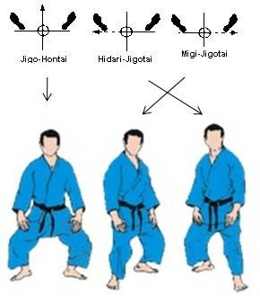

Before starting any fighting sport, we should always prepare our mind to it. Ex:We cannot build a house without a base. Building a base will help you feel better in sports. Most begginners don't understand it, that your body is suppose to move and feel different, that there's supposed to be a balance and good positioning between you and your adversary. These 6 fundamentals will help you find a good posture to your body while you fight.

Now that you've entered the Tatami, you start with your standing position. The importance of having a good position is that it will help you stand well against your opponent.
To start, never stand straight on your heels. Instead, you should put your two legs appart. If you're right-handed, you put your right leg in front. If you're left-handed, you put your left leg in front. You should apply at-least 60% of your weight on your front foot, and 40% of the other weight on your back foot. Your back foot should be lifted up a little-bit as your front foot is flat and stable. Finaly, when you move, keep the position of your legs the same as before and keep your knees bent a little bit. NEVER CROSS YOUR LEGS.
Now that you have catched the details with your legs, you should keep your back straight. This position will help you to keep your balance. If you dont keep that balance, your opponent can easely throw you or sweep you.


The second element in judo has 4 moves that help you . Imagine a square, where your legs are placed at the numbers "1" and "2".
The first move would be going to the side. So from "1" and "2", you move to "4" and "1" or "3" and "2". The first leg you move should go to the furthest part of the square.(because you should never cross your legs!) As you move, keep your knees natural(stable) and do a smooth transition.
The second move, imagine you're placed at "4" and "3", and you have to transition to "4" and "1". The other way is the same, from "4" and "3", you place yourself to "3" and "2".
The third move, the sudden move. Imagine you're placed at "1" and "2", and you have to transition your front foot to "3" and your back foot to "4"(If you're right foot is in front). For lefties, it would be the other way, so from "1" and "2", you go "4" to "3". Your face should arrive at the opposite direction from which you started.
The fourth move, the opposite of the third move. If you're placed at "4" and "3", you place your left foot first at "1", and your right leg at "2". The other way is the same, so from "4" and "3", you go to "2" and "1".
This exercice is not to make you move like a robot, whitch is the mistake begginners do. The goal is not to be clumbsy, but to move smoothly from one point to the other while you are with your opponent. Here are some tips to not look like a robot:
This part is important while throwing. There's 8 directions for your Kuzushi. The point of Kuzushi is to make your opponent off-balanced by using your arms. Examples:
Forward, Backwards, Sideways(right), Sideways(left), Dialing Backwards(right), Dialing Backwards(left), Dioganally Forward(right) and Dioganally Forward(left).
Basically, every throwing technique has its own way of Kuzushi. Off-Balancing is needed to continue your throw, because it is like adding more wood to your fire. You pull or push your opponent, so that you can throw him way more easier in his movement.
Here's an example from a technique called "O-soto-gari":
He pushes his adversary Dialing Backward(left) to unbalance him and lift his forward leg. Then, he sweeps his leg that is still on the ground to finally throw him on his back.
This part requires gripping skills. There are different way of gripping while you fight in judo:
For the right handed: Your right hand will grap his lapel on his Kimono, and your left hand will grab his sleeve on the bottom. As you grip, you can only use your three fingers. Your index and your big finger will be used as censors and you have to keep them relaxed.
For the left handed: It is the same basics, it's just that your left hand will be on your opponents lapel, and your right hand will control his sleeve.
Therefore, there are a lot of different gripping methods uppon the basic one: You can get the high grip on his lapel, control his both sleeves, get a close grip(grap the sleeve and the lapel from the same side) or you can get his back by grabbing your opponents belt.
Finaly, without your Kumikata, it would be impossible to throw your opponent. Without a stong grip, you will get in trouble.
This is an other form of saying "walking". Ayumi Ashi is just normal walking. Before you even grab your partner you're doing Ayumi Ashi, because you walk towards him.
In judo, it is better to use an other form instead of just "Ayumi Ashi", whitch is called "Tsugi Ashi". This form of walking includes sliding forward, backward, sideways and diagonally. As it was mentionned in Shesei, you keep your posture stable. Keep your feet stable, as you shall never cross them. Your right foot will always stay in the front if you're a righty(other way for lefties). You don't want to walk like a robot neither.
When you have a grip, make sure that your legs aren't too far far appart, but about the distance of your shoulders. This way, the opponent will have a harder time with you and it will keep you well defended. Make sure you're also looking forward into your opponent.
Begginners always have problem with their position before or after they attack
What it means is that while you fight, your opponent can push you so it's harder to find momentum to do your throw. Before doing any technique while you fight, you have to position your-self on a good angle to throw your adversary. You will probably do a mistake, whitch is to reach. It is really hard to throw if you reach, so you have to position yourself on a good angle to have a close attack. To avoid any other mistake leading to reaching, you have to bend your elbows while you push, pull and attack.